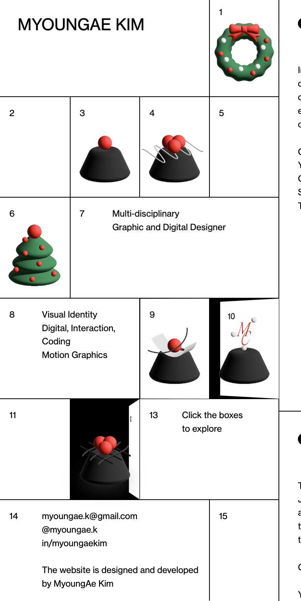
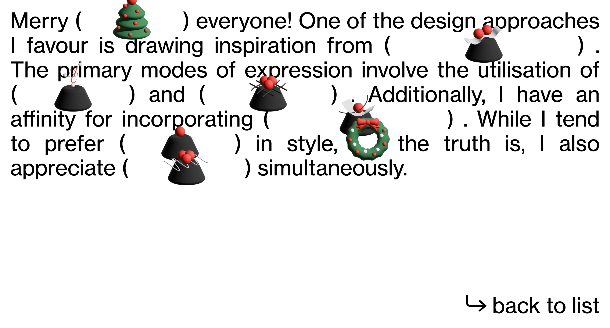

1. What was the first thing you paid attention to when interacting with
the experience?
The first element that instantly catches my attention is definitely the
designers chosen layout of replicating an advent calendar. Since I
personally value aesthetic value first and foremost, I have also paid
attention to the minimalistic and classic design as well as the black
and white color choice. I was entranced by the concept and eventually
the interactive elements that is incorporated within the website.
2. Spend two minutes with the experience and create a list of each of
your discrete actions.
- Click on the web link and open the site up for the first time
- Start clicking the numbered advent boxes, each number at a time
- Clicks on the icon hidden inside the advent box and the icon shakes
- Click and hold icon
- Move the icon around the screen
- Test the same feature out with other icons
- Drop the icons randomly on the page
- Continue to click on boxes to check for interactivity
- Hover my mouse around letters on the web to check for clickable
links
- Simultaneously scrolling up and down the scroll-able area to see her
projects
- Clicks one of the project name
- Got redirected to a specific page for that project
3, What part of the experience did you spend the most time engaging
with?
I definitely spend the most time engaging with clicking the advent boxes
to reveal the hidden icons inside and playing around with the
interactive icons. After I realized the icons are hidden behind the
boxes, I click on the icons to see it shaking and even being grabbable.
Thus, I spent even more time on this feature to open up more boxes, grab
the hidden icons and move them to put them around the website, before
moving on to the next elements in the page.
4. What was the most common action in your two minute interaction with
the experience?
In my two-minute interaction with the experience, the most common action
that I have performed is essentially clicking and trying out interactive
features within the site. I would click from the advent boxes to open
them up, to clicking underlined letters that redirect me to another page
or even clicking on random parts of the page just to look for more
interactive features.

5. What is your impression of the intended primary goal of the
interactive experience?
I believe the intended primary goal of the experience is to present
Kim’s interests, creativity and skills through this portfolio website.
And as it is her portfolio, the ultimate aim is to showcase her work and
projects to others. I think Kim also expect to perk her users curiosity
and excitement through the act of concealing and revealing the advent
calendar compartments, hence the overall conceptual design of this
website.
6. How does the interactive experience communicate this primary goal?
The experience communicate its intended goal of showcasing Kim’s work
through the fact that the main content that is shown in the entirety of
the website is her information or projects. Everything available on the
website would leads the user back to introducing them to MyoungAe Kim as
a designer.
As also mentioned in Kims introductory page, she cares about and work
with elements such as minimalism, grid systems and geometric shapes. And
I believe it is quite evident that this advent calendar styled website
was able to deliver and showcase all of her interests and personality as
a designer, through its layout and displayed content, as well as the
matching skillset needed to make this web happened.
7. What is your impression of how the experience should be interacted
with over time? (For how long and how many different times)
As a first time visitor to Kim’s portfolio website, I definitely have
spent quite an amount of time on the site to visit and explore through
all of her works, as well as play with any and all interactive features
within the web. However, I believe the experience is not designed to be
keep a long term engagement with its users and it would only be
interacted with when people have actively seek for her portfolio to see
the updates on her projects and work experiences.
8. How does the interactive experience communicate how it should be
interacted with over time?
I believe this experience is a short term engagement because it was
communicated through the content that is displayed on her website, which
are all of her work and information about herself. It was able to
deliver its main job of showcasing Kim’s folio to her viewers in
assumably one sitting. There are also no new, surprising or continuously
changing elements that could make each visiting session of her website
be different from the last experience her visitor have had. Henceforth,
reducing the chances of repeated viewing of her web if not for the new
changes to her work experiences.
Despite that, I do believe there is a hint of changes that might come in
the future/over time. As this advent calendar and its christmasy
influenced icons are designed by Kim to celebrate year end, I believe
the seasonal design itself have communicated that there would definitely
be new updates or appearance changes to the folio site as time passed
through the year. Thus, suggesting repeated engagement could be possible
for the website.
9. What other media forms (digital or otherwise) does the experience
reference?
As mentioned directly from her project description as well as just pure
observation, Kim has referenced the look and functionality of an advent
calendar in her portfolio website. This would refer to the openable
boxes in a grid, the labelled numbers that represent each month on a
calendar. Other than that, her design for the project pages have also
remind me, personally, of most exhibition labels. This is due to the
minimalistic linear layout combining with the b&w palette that she uses,
which everything is displayed next to pictures of her work in an
organized manner, similarly to the labels you see in galleries.
10. What does this reference/s communicate to you about how you should
act when engaging with your research experience?
Through the universal knowledge of advent calendars and its function, I
believe she was able to convince the users to interact with the website
in the same manner as they would when interacting with a physical advent
calendar. She have also leave directions on a box saying: ‘Click the
boxes to explore’ to directly communicate her expectation to the user.
And personally for me, because I am reminded of the exhibition label
when seeing her project page, I subconsciously read and take in the
information displayed the same way I read the labels at exhibitions.
11. What does this reference/s communicate to you about how you should
feel when engaging with your research experience?
With the Christmas inspired looking icons and the interactive components
of an advent calendar, I believe that Kim have successfully evoke a
sense of familiarity to her users. This is due to most users known
experience with physical advent calendars, reminding the users of their
memories during holiday season. Other than that, with the familiar sight
of the advent calendar design, it might have also perks up the users
excitement and curiosity when engaging with Kim’s interactive site.

12. What is the most satisfying part of the interaction to you and what
makes that part satisfying?
I would say the most satisfying part of the interaction to me is the
smooth animation and dragging feature of both the interactive icons and
advent calendar compartments. I find them to be satisfying because I
feel like it was able to deliver exactly and smoothly the experience of
opening an actual advent calendar as well as the fun and excitement that
comes along with playing around with the ‘gifts’ found inside.
13. What is the most frustrating part of the interaction to you and what
makes that part frustrating?
Personally, I find the most frustrating part of this interaction to be
the wipe transition from the advent calendar main page to Myoungae Kim’s
information page. I have noticed that there are no transitions used in
the other pages such as when clicking into her different projects, which
I think is aligning to the modern and simple design of the website.
However, it is frustrating to me that even after many attempts of going
back and forth between the two pages mentioned above, I still felt like
the transition that she have used for the only one information page was
out of place in comparison to the rest of the site, resulting in a small
disturbance to the entire unified experience.